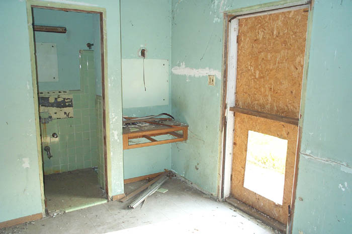

The Bon Air Motel
The crumbling Bon Air Motel stands on Route 30 near Williamstown and Mt. Blanchard in Hancock County, close to the Hardin County line. I passed this place once a couple of years ago when I missed my exit coming home from Toledo and used 30 as an alternate from I-75 to Route 23 in Upper Sandusky. Unfortunately I was in a hurry and didn't have time to stop and take pictures; these were taken on a return trip in July 2002. Route 30 is part of the old Lincoln Highway, which was America's first transcontinental highway. Completed in 1920, the Lincoln Highway stretched from New York City to San Francisco. The Lincoln predates the interstate system, as well as Route 66. In Ohio it cut across the north central portion of the state, missing every city of any size. This stretch of the Lincoln highway is home to at least half a dozen interesting abandoned places, but for my money the Bon Air is the best one.
The old neon sign still stands near the road with the words "Truckers Welcome" at the top. Is there a lot of trucker discrimination out there? This seems like it might be worth salvaging, if you have a big truck and about eighty Navy Seals to help you get it down, as well as somebody who can restore it. At any rate, it's a neat sort of thing to see on a country highway. If you're interested in forgotten motels, check out my section on the Shamrock Motel on Route 40.
The motel itself is L-shaped. Near the place where the two sections meet is the old night check-in--a covered drive-through with a boarded window. Today it doesn't drive through to anything but the field in the middle of the property.
I believe the main office used to be at the center of the long section which parallels the highway, in the part that sticks out a little. The owner and his family had an apartment here. When we were there the office was completely trashed but still had a recognizable kitchen, which you can see below.
Heading back through the office we finally came to the last room. What we found there is beyond weird. If you're offended by softcore pornography, please cover your eyes and scroll down past the next picture.
That's right--pictures of naked women. And not just pictures torn out of magazines; color printouts of jpegs of naked women, scattered everywhere throughout the room. Several had been duct taped to the walls, but many were just piled on the floor. My amateur explanation is that some local kids use this part of the motel to store the porn their parents keep finding under their mattresses. It's still a weird, weird thing to come across in an abandoned building--and gross, too.
Speaking of gross, a local I received an e-mail from told me that the Bon Air was allegedly the site of a lot of prostitution in the '70s and '80s. Truckers would stop by and hook up with resident girls. I don't know how true the stories are, but that's what they say.
Many of the rooms are still accessible through weird square holes in the boarded-over doors. I crawled into a couple and took photos of the bland, bare motel rooms.

As you can see, the rooms featured a bathroom and a small telephone table built into an alcove. This is probably from the time when the phone company owned the phones and had them permanently installed. Each room was also divided into two sections for some reason--unless they were considered separate rooms. It's hard to tell where the furnishings went.
Pictured above is the interior of a room near the night window. The tiled walls indicate that it might have been a hot tub room or something similar at one time. Also, there are little pool scenes stencilled on the walls. The room is way too small to have held a pool, but maybe there was one on the property at some point.
The Bon Air is a picturesque relic from the era of highway travel, located in such a rural area that it could stand for a hundred years just the way it is. I'd be interested to hear from anyone who ever stayed here or knows anything about the place. And if you're interested, check out Highway 30 sometime for this and many other glorious forgotten roadside sights.
The Lincoln Highway and US 20 in Ohio
The Shamrock Motel, Kirkersville
Back
forgottenohio@yahoo.com
facebook.com/andy.henderson.319
{kind=link}
{kind=link}
{kind=link}
{kind=link}
{kind=link}
{kind=link}
{kind=link}
{kind=link}
{kind=link}
{kind=link}
{kind=link}
{kind=link}